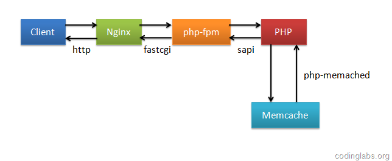

为了提高性能，几乎所有互联网应用都有缓存机制，其中Memcache是使用非常广泛的一个分布式缓存系统。众所周知，LAMP是非常经典的Web架构方式，但是随着Nginx的成熟，越来越多的系统开始转型为LNMP（Linux+Nginx+MySQL+PHP with fpm），这是因为Nginx采用基于事件机制的I/O多路复用思想设计，在高并发情况下其性能远远优于默认采用prefork模式的Apache，另外，相对于Apache，Nginx更轻量，同时拥有大量优秀的扩展模块，使得在Nginx上可以实现一些美妙的功能。
传统上，PHP中使用memcache的方法是使用php-memcache或php-memached扩展操作memcache，然而在Nginx上有构建更高效缓存机制的方法，本文将首先介绍这种机制，然后介绍具体的操作步骤方法，最后将对这种机制和传统的PHP操作memcache的性能进行一个benchmark。
Nginx的Memc和SR Cache模块
缓存策略的改进
我们知道，Nginx的核心设计思想是事件驱动的非阻塞I/O。Nginx被设计为可以配置I/O多路复用策略，在Unix系统中传统的多路复用是采用select或poll，但是这两个方法的问题是随着监听socket的增加，性能会下降，因为在linux内核中是采用轮询的方式判断是否可以触发事件，换句话说算法的复杂度为O(N)，而在较新的linux内核中引入了复杂度为O(1)的epoll，因此Nginx在Linux下默认采用epoll，而在FreeBSD下默认采用kqueue作为I/O策略。
即便是这样，传统的缓存策略仍可能造成效率低下，因为传统上是通过PHP操作memcache的，要执行PHP代码，Nginx就必然要和FastCGI通信，同时也要进入PHP的生命周期，因此SAPI、PHP Core和Zend Engine的一系列逻辑会被执行。更糟糕的是，fpm和PHP可能会阻塞，因此破坏了Nginx的非阻塞性。（原文中此处表述有误，fastcgi与nginx进行同步通信，但并不会破坏nginx i/o的非阻塞性，多谢agentzh给予指正）下图展示了在memcache命中时整个处理过程。

可以看到，即使memcache命中，还是要进入PHP的生命周期。我们知道，目前很多互联网应用都使用RESTful规范进行设计，在RESTful应用下，普遍使用uri和查询参数作为缓存的key，因此一种更高效的缓存策略是Nginx直接访问memcache，并用uri和args等Nginx内置变量设定缓存key规则，这样，当缓存命中时，Nginx可以跳过通过fastcgi和PHP通信的过程，直接从memcache中获取数据并返回。memc-nginx和srcache-nginx正是利用这种策略提高了缓存的效率。下图是这种高效缓存策略的示意图（当memcache命中时）。

模块介绍
memc-nginx和srcache-nginx模块均为前淘宝工程师agentzh（章亦春）开发。其中memc模块扩展了Nginx标准的memcache模块，增加了set、add、delete等memcache命令，而srcache则是为location增加了透明的基于subrequest的缓存层。两者配合使用，可以实现上一节提到的高效缓存机制。关于两个模块的详细信息可以参考它们Nginx官网的wiki（memc wiki，srcache wiki）页。
安装及配置
下面以LNMP环境介绍如何使用这两个模块构建缓存层。
因为Nginx并不支持模块动态加载，所以要安装新的模块，必须重新编译Nginx。首先下载两个模块（memc下载地址，srcache下载地址），另外，为了发挥出缓存的最大性能，建议将memcache的upstream配置为keep-alive，为了支持upstream的keep-alive需要同时安装http-upstream-keepalive-module。
将模块下载并解压到合适的目录，这里我Nginx使用的版本是1.0.4，与相关模块一起解压到了/home/zhangyang/downloads，如下图所示。

其中红框框起来的是我们需要用到的模块。进入nginx目录，执行下列命令：
- ./configure --prefix=/usr/local/nginx \
- --add-module=../memc-nginx-module \
- --add-module=../srcache-nginx-module \
- --add-module=../ngx_http_upstream_keepalive
- make
- make install
这里我将nginx安装到/usr/local/nginx下，你可以根据自己的需要更改安装路径，另外，我只列出了本文必要的configure命令，你也可以增加需要的configure选项。
然后需要对nginx进行配置，nginx默认主配置文件放在安装目录的conf下，例如我的主配置文件为/usr/local/nginx/conf/nginx.conf。
这里我只贴出相关的配置：
- #Memcache服务upstream
- upstream memcache {
- server localhost:11211;
- keepalive 512 single;
- }
- server {
- listen 80;
- server_name localhost;
- #memc-nginx-module
- location /memc {
- internal;
- memc_connect_timeout 100ms;
- memc_send_timeout 100ms;
- memc_read_timeout 100ms;
- set $memc_key $query_string;
- set $memc_exptime 300;
- memc_pass memcache;
- }
- location / {
- root /var/www;
- index index.html index.htm index.php;
- }
- # pass the PHP scripts to FastCGI server listening on 127.0.0.1:9000
- #
- location ~ \.php$ {
- charset utf-8;
- default_type text/html;
- #srcache-nginx-module
- set $key $uri$args;
- srcache_fetch GET /memc $key;
- srcache_store PUT /memc $key;
- root /var/www;
- fastcgi_pass 127.0.0.1:9000;
- fastcgi_index index.php;
- include fastcgi_params;
- fastcgi_param SCRIPT_FILENAME $document_root$fastcgi_script_name;
- }
- }
下面解释一下其中几个点。
上文说过，memc-nginx是一个标准的upstream模块，因此首先需要定义memcache的upstream。这里我在本机上启动了一个memcache服务，端口为默认的11211，keepalive指令是http-upsteram-keepalive-module提供的功能，这里我们最大保持512个不立即关闭的连接用于提升性能。
下面是为memc-nginx-module配置location，我们配置为/memc，所有请求都通过请求这个location来操作memcache，memc-nginx-module存取memcache是基于http method语义的，使用http的GET方法表示get、PUT方法表示set、DELETE方法表示delete。这里我们将/memc设为internal表示只接受内部访问，不接收外部http请求，这是为了安全考虑，当然如果需要通过http协议开放外部访问，可以去掉internal然后使用deny和allow指令控制权限。比较重要的是memckey这个变量，它表示以什么作为key，这里我们直接使用Nginx内置的query_string来作为key，$memc_exptime表示缓存失效时间，以秒记。这里统一设为300（5分钟），在实际应用中可以根据具体情况为不同的内容设置不同的过期时间。
最后我们为“~ \.php$”这个location配置了缓存，这表示所有以“.php”结尾的请求都会结果被缓存，当然这里只是示例需要，实际中一般不会这么配，而是为特定需要缓存的location配置缓存。
srcache_fetch表示注册一个输入拦截处理器到location，这个配置将在location进入时被执行；而srcache_store表示注册一个输出拦截器到location，当location执行完成并输出时会被执行。注意srcache模块实际可以与任何缓存模块进行配合使用，而不必一定是memc。这里我们以uriargs作为缓存的key。
经过上述配置后，相当于对Nginx增加了如下逻辑：当所请求的uri以“.php”结尾时，首先到memcache中查询有没有以uriargs为key的数据，如果有则直接返回；否则，执行location的逻辑，如果返回的http状态码为200，则在输出前以uriargs为key，将输入结果存入memcache。
更多配置
上一节给出了使用memc和srcache构建缓存层的最基本方法，实际应用中可能需要更多灵活的配置，例如为不同的location配置不同的缓存参数，根据返回内容而不是返回的http状态码确定是否缓存等等。可以有很多的方法实现这些需求，例如，srcache还支持两个指令：srcache_fetch_skip和srcache_fetch_skip，这两个指令接受一个参数，当参数已定义且非0时，则进行相应操作，否则不进行。例如，如果配置了srcache_fetch_skip skip，这条指令，那么只有当skip的值为非0时，才将结果缓存，如果配合ngx_lua模块的set_by_lua指令，则可以实现复杂的缓存控制。如：
- location /xxxx {
- set $key ...;
- set_by_lua $skip '
- if ngx.var.cookie_foo == "bar" then
- return 1
- end
- return 0
- ';
- srcache_fetch_skip $skip;
- srcache_store_skip $skip;
- srcache_fetch GET /memc $key;
- srcache_store GET /memc $key;
- # proxy_pass/fastcgi_pass/...
- }
这表示对/xxxx这个location的访问，只有存在cookie “foo”且值为“bar”时缓存机制才起作用。关于ngx_lua的更多内容请参考其主页。
另外，我最近在春哥（章亦春在淘宝的昵称）的微博上看到他目前正在完善srcache的功能，为其实现更多RFC2616的缓存行为标准。关于这个模块的最新动态可以关注其github主页。
Benchmark
下面对使用memc和srcache构建的缓存机制进行一个简单的benchmark，并与使用PHP操作memcache的策略进行一个对比。为了简单起见，我们的测试PHP脚本不去访问I/O，而仅仅是调用phpinfo函数输出PHP相关信息。
测试一共分三组进行：第一组在Nginx和PHP中均不开启缓存，第二组仅使用PHP memcache缓存，第三组仅使用Nginx memcache缓存。三组都用ab程序去压，并发数为20，请求次数为10000。
这里的测试环境是我的一个虚拟机，操作系统为Ubuntu10，内存512M。Nginx采用epoll，单worker进程，memcache最大并发数为1024，最大使用内存64m。
不开启缓存
这一组我们不开启缓存，PHP程序非常简单：
- <?php
- phpinfo();
- ?>
测试结果如下：

PHP memcache缓存策略
第二组我们用PHP操作缓存，测试脚本为：
- <?php
- $memc = new Memcached;
- $memc->addServer('localhost', 11211) or die('Connect to memcache server failed!');
- $output = $memc->get('my_key');
- if(empty($output)) {
- ob_start();
- phpinfo();
- $output = ob_get_contents();
- ob_end_clean();
- $memc->set('my_key', $output, 300);
- }
- echo $output;
- ?>
测试结果如下：

Nginx memcache缓存策略
最后，我们将PHP脚本回归到不使用缓存的版本，并配置好memc和srcache缓存机制。测试结果如下：

结果对比分析
为了直观，我取“每秒处理请求数”、“平均每个请求处理时间”和“吞吐率”作为评价指标，制作了一张图表。

我想看到图表，结论已毋需我多言。在各项指标上使用memc和srcache构建的缓存机制都大大优于使用PHP操作memcache。其中每秒处理请求数（并发度）和吞吐率都是其9倍左右，而平均个请求所用时间仅有传统策略的1/8。
这里要特别说明一下，这里之所以PHP memcache策略比不使用缓存优势不明显，是因为我们的PHP脚本不涉及I/O操作，如果其中存在如数据库存取，PHP memcache的优势还是有的，但不论如何，Nginx memcache策略在性能上的优势是其无法比拟的。
另外，除了性能优势外，使用这种策略还可以简化PHP逻辑，因为缓存这一层都放在Nginx中了，PHP就从缓存操作中解放了出来，因此是一举多得。
如果你的系统也构建在LNMP上（或LAMP）上，不妨使用本文提到的方法替代传统的缓存策略，尽情享受性能上的提升。